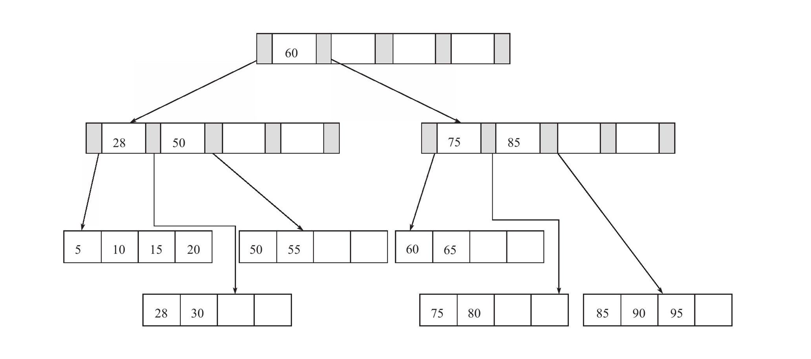
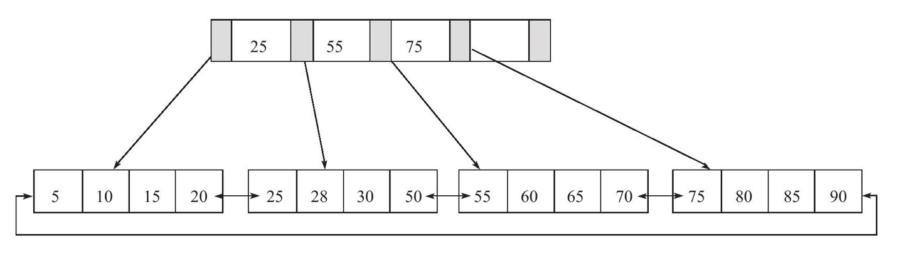

最常见的BTree索引，按照顺序存储数据，所以MySQL可以用来做ORDERBY和GROUPBY操作。因为数据是有序的，所以BTree也就会将相关的列值都存储在一起。最后，因为索引中存储了实际的列值，所以某些查询只使用索引就能够完成全部查询。据此特性，总结下来索引有如下三个优点：
- 索引大大减少了服务器需要扫描的数据量。
- 索引可以帮助服务器避免排序和临时表。
- 索引可以将随机I/O变为顺序I/O。
如何评价一个索引是否适合某个查询的“三星系统”（threestarsystem）：
- 索引将相关的记录放到一起则获得一星；
- 如果索引中的数据顺序和查找中的排列顺序一致则获得二星；
- 如果索引中的列包含了查询中需要的全部列则获得“三星”。
索引并不总是最好的工具
只有当索引帮助存储引擎快速查找到记录带来的好处大于其带来的额外工作时，索引才是有效的。对于非常小的表，大部分情况下简单的全表扫描更高效。对于中到大型的表，索引就非常有效。但对于特大型的表，建立和使用索引的代价将随之增长。可以使用分区技术
如果表的数量特别多，可以建立一个元数据信息表，用来查询需要用到的某些特性。例如执行那些需要聚合多个应用分布在多个表的数据的查询，则需要记录“哪个用户的信息存储在哪个表中”的元数据，这样在查询时就可以直接忽略那些不包含指定用户信息的表。对于大型系统，这是一个常用的技巧。事实上，Infobright就是使用类似的实现。对于TB级别的数据，定位单条记录的意义不大，所以经常会使用块级别元数据技术来替代索引。
但是B+索引在数据库中有一个特点是高扇出性每页四条记录，因此在数据库中B+树的高度一般都在2 ～ 4层， 这也就是说查找某一键值的行记录时最多只需要2 到4次IO， 这倒不错。 因为当前一般的机械磁盘每秒至少可以做100次IO， 2 ～ 4次的IO意味着查询时间只需0. 02 ～ 0. 04秒。
数据库中的B+树索引可以分为聚集索引（ clustered inex）和辅助索引（ secondary index）但是不管是聚集还是辅助的索引，其内部都是B+树的，即高度平衡的， 叶子节点存放着所有的数据。 聚集索引与辅助索引不同的是， 叶子节点存放的是否是一整行的信息。

如上图是table a （id, name） 的记录总共15条，ID=5～95 由于ID是聚集索引，所以叶子节点存放是id所对应的一行数据，且这些数据是顺序存放的 ,那么在数据中B+树索引表示如图 每个节点树的索引值就是id的值，而最底层的叶子节点就是存放一行的数据如下图：

select * from a where id = 5
id=5的的行数据在最左边其次是 id =10的 以此类推，所以如果查询id=60的 那么，首先对index Page 取中判断55 <60 ，在找55的右子页（右子页的索引值是75也就是在75索引的左边页）数组进行遍历判断，数组的索引值为1开始（B+ 右边存放的是大于或者等于父节点的树）将结果返回 ，其次他们双向链接首尾相连 ，根据当前ID查找上下id只需一次操作 故 select * from a where id
索引分为聚簇索引和非聚簇索引两种 聚簇索引是按照数据存放的物理位置为顺序的，而非聚簇索引就不一样了,聚簇索引能提高多行检索的速度，而非聚簇索引对于单行的检索很快。
-- 关闭索引
ALTER TABLE `test` DISABLE KEYS ;
-- 开启索引
ALTER TABLE `test` ENABLE KEYS;